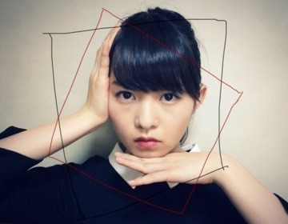
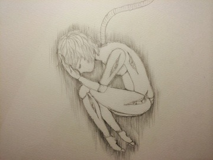

| 2014/07 04 Fri | 陶器肌鎖骨。582回目 |
声出るようになった！
ライブまで喉のケアを欠かさず
気をつけます。
話せないって辛いのね。
話せるって幸せだー
そういえばこの前
みんながパリ行ってる間、
パリ行かない組
マネージャーさんメンバーと
フレンチを楽しみました。
みんなおめかしして行ったよー

私は黒の七分袖膝丈タイトワンピで、
お上品でシンプル。
ポニーテールに赤リップ。

フレンチ美味しかったあ
ママとお買い物したよー
お人形と絵画の展覧会行った。
セールとか行ってきた！
すごいねーセール人いっぱい。
人混みに疲れて
ヴィンテージショップに行ったら
かわいい靴見つけたっ
びびっときた〜
早く履きたい〜
セールもいいけど、やっぱり
ヴィンテージショップや
セレクトショップで
ゆっくり服を見るのがいちばん。
写真の服装がどっちも黒ワンピに
襟だから似てるね笑
最近は落ち着いた服装を好んで
着るようになりました。
／
描いたり作ったりなんかしらしたら
載せてみるこーなー
＼

人間を描こうと思ってたんだけど、
展覧会のお人形に影響されて
お人形になりました...
そうして付け加えてったら
最終的にはロボットになった。

お知らせ！
フジテレビ系「MUSIC FAIR」
2014年7月5日（土）
2014年7月5日（土）
18時00分〜18時30分
2014年7月12日（土）
2014年7月12日（土）
18時00分〜18時30分
MUSIC ON! TV
『最新最速エンタメタイム CDET!』
2014年7月5日（土）
17時57分〜20時00分
明日です！
生放送、あみと出演します！
声ががらがらじゃない私よ！
ぜひぜひ見てねっ
まりか
コメント(537)
2014/07/04 21:24